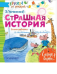

В книгу "Страшные истории. Стихи-забияки" вошли простые и вместе с тем весёлые стихотворения Эдуарда Успенского "Тигр вышел погулять", "Разноцветная семейка", "Воздушные шары", "Разгром", "Сумерки" и другие. Также эта книга представляет Анну Остроумову и ее рассказ "Я гуляла на площадке". Для детей до 3-х лет.